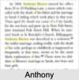

| [Index] |
| Elizabeth WEBB |
|  |
| m. 25 Jul 1796 Anthony BROWN (1781 - 1853) at Hackney |
| Children (3): |
| Ann Good BROWN (1798 - 1870) |
| Elizabeth BROWN (1800 - 1875) |
| Charles Anthony BROWN (1802 - ) |
| Events in Elizabeth WEBB's life | |||||
| Date | Age | Event | Place | Notes | Src |
| 25 Jul 1796 | Married Anthony BROWN (aged 15) | Hackney | Note 1 | ||
| 26 May 1798 | Birth of daughter Ann Good BROWN | Bethnal Green | Note 2 | ||
| 06 Aug 1800 | Birth of daughter Elizabeth BROWN | London | Note 3 | ||
| 27 Apr 1802 | Birth of son Charles Anthony BROWN | City of London | Note 4 | ||
| 15 May 1853 | Death of husband Anthony BROWN (aged 72) | Battersea, London | Note 5 | ||
| 11 Jan 1870 | Death of daughter Ann Good BROWN (aged 71) | Clapham Rise London | Note 6 | ||
| 09 Jun 1875 | Death of daughter Elizabeth BROWN (aged 74) | Amberley, Glos | Note 7 | ||
| Created on a Mac™ using iFamily for Mac™ on 8 Oct 2023 |